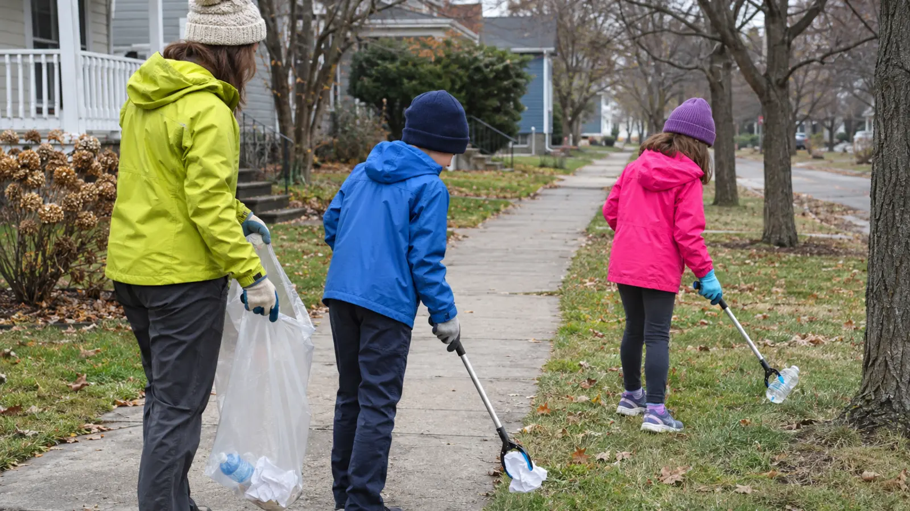

Pick
Dry paper, clean cardboard, empty plastic bottles and ordinary cans visible from above. Use a grabber or tongs. The adult decides.
AFTER SCHOOL · NO-SPEND SERVICE · EXPLORATION
Pick a sidewalk, park edge or school ground you have permission to use. Adults scan first. Kids touch only ordinary dry litter with tools. Needles, glass, chemicals, traffic and heavy junk are report-and-leave problems.

A useful family cleanup does not need matching shirts, a giant event or a truck full of trash. It needs one permissioned place, one adult who scans first, a short clock and a stop list everyone follows. Choose a public sidewalk verge, park edge, school ground or community space where cleanup is allowed and traffic can be avoided. Limit the job to 30 minutes and one manageable bag.
New York DEC says young volunteers should be accompanied by an adult and that age should drive site choice; it specifically points families away from roadways and toward parks or bike trails. Its safety checklist says children under 16 should not participate in roadway cleanups. This plan is not a roadway cleanup.
Use supplies already owned; this can cost zero. School-age children can participate on a low-risk, traffic-free site with direct adult supervision. Younger kids can tally from a fixed safe point. Anyone who cannot reliably follow “stop and point” should not handle litter.
Public does not mean “do anything.” Confirm who manages the park, trail, school ground or block and where collected trash may go. The City of Syracuse Adopt-A-Block program is a separate formal commitment for individuals and groups that adopt at least two blocks and conduct monthly cleanups; do not claim participation unless enrolled.
SYRCityline accepts non-emergency reports including debris on roads, trash and illegal dumping, obstructing tree limbs and Adopt-A-Block pickup requests. The City says Cityline is not for emergencies. Its current sharps page also states that sharps are medical waste and dangerous; families should not treat a street needle as ordinary cleanup litter.
Pair the outing with the walking-visibility guide only for ordinary pedestrian visibility; gear does not make a roadside cleanup acceptable. Use the family first-aid kit guide to organize supplies, not to justify risk.
Rain, snow or darkness: postpone; wet litter hides sharp edges and snow hides hazards. Heat: shorten, carry water and avoid midday. Wind: do not chase litter. Off-leash dog or conflict: leave. Bag gets heavy: stop. Low energy: walk five minutes, record three problem spots and submit one non-emergency report. At-home backup: do the 25-minute pantry date-label check or sort existing household recycling under adult rules.
Skip when the only available site touches fast traffic, snow covers the ground, hazardous debris is common, permission is unclear, the adult cannot supervise every child, or collected material has no lawful disposal route. Also skip when the activity would become public shaming. Clean the place; do not post identifiable homes, people or vehicles.
For a quieter observation walk without collecting anything, use the 20-minute neighborhood sound map.
Reviewed November 9, 2026 using New York DEC’s cleanup-event guidance and cleanup safety checklist, the City of Syracuse SYRCityline service page, and its sharps guidance. The 30-minute one-bag plan and pick/leave/report card are independent editorial tools. No affiliate links are attached.
MAKE THE WEEK COUNT
Build the plan your family can finish well, then leave enough energy for the next part of the day.
More family plans